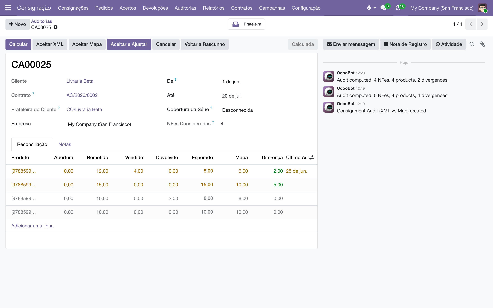
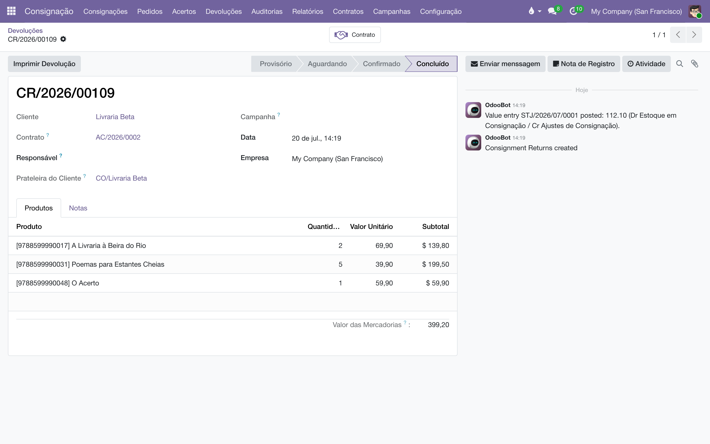

Reconstrua o saldo que a prateleira de um cliente deveria ter a partir das próprias notas fiscais — remessas, vendas e devoluções — e acerte o mapa com um ajuste registrado no estoque e na contabilidade.
O dia a dia da consignação mantém o mapa incrementalmente: cada remessa soma, cada acerto e devolução subtrai. A auditoria faz o caminho inverso: pega todas as notas fiscais de consignação importadas (veja Importação de XML de NF-e) de um cliente e refaz a conta do zero, por título:
Esperado = abertura + remessas (CFOP 5917/6917) − vendas efetivadas (5113/5114/6113/6114) − devoluções (5918/5919/6918/6919). Notas canceladas ficam de fora. Diferença = esperado (fiscal) − mapa (prateleira atual). Positiva: o fiscal diz que há mais na prateleira do que o mapa mostra; negativa: o contrário (perda/quebra).
Serve para dois momentos:
Cada auditoria é um documento numerado (série CA), preso ao cliente e a um período. Aceitar as diferenças gera um movimento de Ajuste — um movimento de consignação de tipo próprio, que corrige a prateleira por um movimento de inventário de verdade (a correção fica no histórico do estoque) e lança a diferença de valor na contabilidade.
O motor lê as notas já importadas e interpretadas — ele nunca reprocessa arquivos XML. Se falta nota, o problema (e a solução) está na importação, e a auditoria aponta isso em vez de esconder.
Cada CFOP diz à auditoria como um item de nota mexe na prateleira. A tabela vem pré-classificada com os CFOPs clássicos da consignação e é editável em (menu de administrador):
| Efeito | Significado | CFOPs pré-classificados |
|---|---|---|
| Remessa (+ prateleira) | Livros indo para o cliente. | 5917/6917 — e também 5914 (feira) e 5949/6949 ("outra saída"), porque na prática essas notas põem livro na prateleira do cliente e muitas vezes ele não volta. |
| Venda efetivada (− prateleira) | O acerto fiscal: o que vendeu. | 5113/6113 (produção própria) e 5114/6114 (mercadoria de terceiros). |
| Devolução / retorno (− prateleira) | Livros voltando (física ou simbolicamente). | 5918/6918 e 5919/6919. |
| Ignorar | Nota que não mexe na prateleira, de propósito. | — |
Clientes erram CFOP com frequência — por isso a classificação é dado, não código. Use o filtro Não mapeados para revisar CFOPs recém-aparecidos nas notas.
Em , bloco Auditoria de Consignação:
Sem as contas configuradas, o ajuste de quantidade acontece do mesmo jeito — e o documento avisa que o lançamento de valor foi pulado, para ser feito à mão.

Uma auditoria só é confiável se a série fiscal está completa e legível. Por isso, tudo que não pôde ser contado aparece em avisos no topo do formulário — nada é descartado em silêncio:
| Aviso | O que significa | O que fazer |
|---|---|---|
| Itens fiscais sem produto | Itens de nota cujo código de barras não bateu com nenhum produto do catálogo. Não entram em nenhuma linha. | Corrija o catálogo (ou o apelido do produto) e clique em Calcular de novo. |
| CFOPs não mapeados | Notas do cliente com CFOP sem efeito configurado. | Se algum for movimento de consignação, mapeie em e recalcule. |
| Notas sem CFOP | Notas cujo CFOP não foi lido na importação ou não existe na tabela. Também ficam de fora. | Cadastre o CFOP, revincule as notas e recalcule. |
O campo Cobertura da Série (Desconhecida / Parcial / Completa) é a sua anotação de confiança: marque Completa só depois de revisar os avisos — a auditoria não adivinha se todas as notas do cliente foram importadas.
Cada linha divergente pede uma Resolução:
A coluna Ajuste mostra, em tempo real, o que o movimento vai aplicar (aceito − mapa, com sinal). Para resolver tudo de uma vez, os botões do topo Aceitar XML e Aceitar Mapa aplicam a mesma resolução a todas as linhas — com confirmação antes.
Um título com saldo fiscal negativo (mais vendas que remessas na série) é sinal de série incompleta — faltam XMLs de remessa ou um saldo de abertura. A prateleira não pode ficar negativa, então o aceito é travado em zero e o caso é anotado no histórico, com os títulos listados. Prefira completar a série (ou preencher a Abertura) e recalcular.

| Regra | Por quê |
|---|---|
| Não se aceita com divergência sem resolução ("N linha(s) divergente(s) ainda sem resolução…"). | Aceitar é uma decisão por título; o sistema não decide por você. |
| Auditoria aceita não se recalcula — é preciso voltá-la a rascunho primeiro. | O ajuste já foi para o estoque; recalcular por cima esconderia o que foi feito. |
| Um ajuste concluído não se cancela ("…já moveu estoque e lançou seu valor. Faça um ajuste oposto."). | Correção se corrige com outra correção — nunca apagando a primeira. O rastro fica inteiro. |
| Notas canceladas nunca contam. | Nota cancelada não moveu livro nenhum. |
| O que não pôde ser contado aparece em aviso — item sem produto, CFOP não mapeado, nota sem CFOP. | Uma diferença "resolvida" sobre série furada é pior que a diferença: os avisos impedem o fechamento cego. |
| Aceitar exige contrato com prateleira ativa. | O ajuste materializa na prateleira; sem contrato ativo não há onde aplicar. Ative o contrato antes (a auditoria de um contrato encerrado ainda calcula — só não ajusta). |
A auditoria substitui o inventário físico?
Não — são réguas diferentes. A auditoria compara o mapa com a verdade fiscal (o que as notas dizem); o Inventário compara com a contagem física na livraria. O ideal é usar as duas: o fiscal encontra nota faltando, a contagem encontra livro sumido.
Calculei e veio tudo zerado.
Ou não há notas importadas para esse cliente no período, ou as notas estão lá mas sem CFOP classificado — confira os avisos no topo e a tela de Efeitos de CFOP.
Posso auditar só o último trimestre?
Pode, mas a conta só fecha se você preencher a Abertura de cada título com o saldo no início do período. Sem abertura, período parcial produz diferenças falsas — na dúvida, deixe De vazio e audite a série inteira.
O ajuste apareceu na lista de Devoluções?
Não — a lista de Devoluções mostra só devoluções. Os ajustes são movimentos do tipo próprio Ajuste e são acessados pela auditoria que os gerou (botão Ajuste).
Todo documento do sistema carrega um prefixo na numeração — CO/2026/00001 é um acerto, AT/2026/00042 é um chamado. A lista é a mesma em todos os manuais:
| Prefixo | O que é |
|---|---|
C | Pedido de consignação: o pedido que põe livros na prateleira do cliente — C00001, no lugar do S da venda comum. |
CO/ | Consignação, o documento do acerto: registra o que o cliente vendeu e vira venda — CO/2026/00001. |
CR/ | Retorno de consignação: o documento que pede a devolução dos exemplares da prateleira — CR/2026/00001. |
CA | Auditoria de consignação: reconstrói o saldo da prateleira do cliente pelas notas fiscais e registra o ajuste — CA00001. |
CP/ | Campanha de consignação: o sortimento-alvo por canal — quantos exemplares de cada título as prateleiras devem ter — CP/2026/0001. |
AC/ | Acordo de Consignação: o contrato com a livraria, dono da prateleira — AC/2026/00001. |
COM/ | A série das transferências de remessa e entrega de consignação do armazém — COM/2026/00001. |
RET/ | A série das transferências de retorno de consignação, da prateleira ao armazém — RET/2026/00001. |
REM/ | Remessa: a nota de simples remessa, sem cobrança — a numeração vem do diário fiscal REM. |
COL/ | Coleta: o lote do pedido de coleta às transportadoras — COL/2026/00001. |
AT/ | Atendimento: o chamado nascido do e-mail comercial — AT/2026/00001. |
MBX/ | O lote de envio de metadados à Metabooks — MBX/2026/00001. |
Impostos de Direitos Autorais/ | O lote da fatura acumuladora do IRRF retido dos autores no mês. |
Royalties entre Empresas/ | O lote da fatura acumuladora de royalties entre as empresas da casa. |
| Do próprio Odoo | |
S | Pedido de venda comum — S00001; o pedido de consignação usa o C no lugar. |
WH/OUT | Entrega comum do armazém: a transferência de saída padrão do Odoo. |
WH/IN | Recebimento do armazém: a transferência de entrada padrão do Odoo. |
Manual completo, com busca e as demais páginas: Auditoria pelo XML.